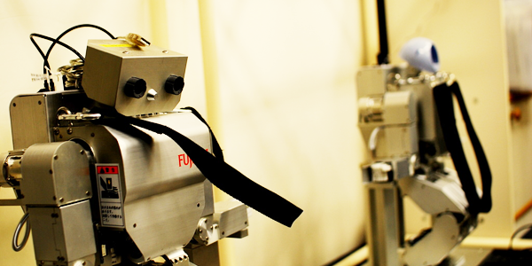
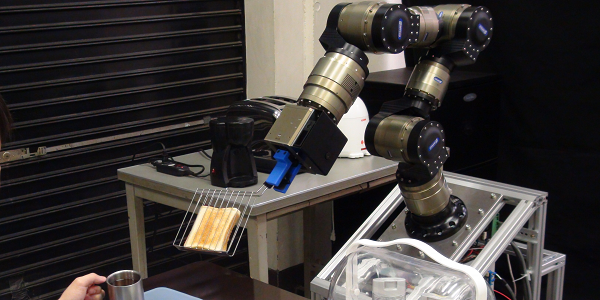
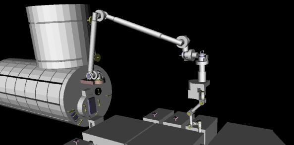
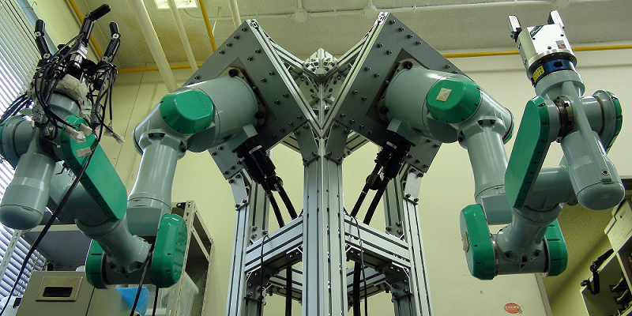

Humanoid Robot
・ 様々な状況下でのバランス制御
様々なシチュエーションを想定した人型ロボットのバランス制御法の構築、および実機への適用
・ Trajectory/Force 制御
窓や机の拭き掃除といった動作の実現のため、Force Torqueセンサを用いてのトルク制御
・ シミュレータの開発
効率のよい開発を行うために、モデル変更の容易な高速動力学シミュレータの開発

Home Robot
・MMMコンセプト
ホームロボットによる家事の代行を実現するために作業ごとに必要な機能をモジュール化し、 必要最小限なモジュールのみによる目標達成と、 モジュール追加や組み替えによる多くの作業の実行をMMMコンセプトに基づき実現

Space Robot

Dual-Arm Robot
・双腕ロボット
家庭内作業実現のための経路計画法による作業計画および単腕では把持不可能な対象物体に対して、双腕間の付加分配を考慮した作業の実現
・多指ロボットハンド
多指ロボットハンドによる把握、操作、各指間の協調制御の実装と、動力学を考慮した作業の実行